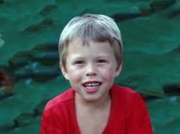

Çocukluk ve Okul Dönemi
Çocukken aile içi problemler ve okulda başına gelen akran zorbalığı sebebiyle büyük sıkıntılar çekti. Hatta öyle ki, içinde düştüğü yalnızlıktan dolayı kendini kitaplara adadı. 9 yaşındayken bitirdiği Britannica ansiklopedisini üniversite mezunları daha yeni okurken o çoktan okuyup başka kitaplara yönelmişti. 10 yaşına geldiğinde ailesi ona çağın en iyi bilgisayarından biri olan Commodore VIC-20’yi aldı. Bu hediye onun hayatındaki değişikliğin ilk adımıydı. Üç gün hiç uyumadan basit programlama öğrenerek bilgisayarı adeta elinde oyuncak etmeye başlamıştı. Programlamada o kadar gelişmişti ki Blastar adlı oyunu yaparak bu oyunu 500 dolara satmıştı. Bu satıştan sonra ismi çok sık duyulmaya başlamıştır. 17 yaşına geldiğinde Elon daha çok fırsatın olduğuna inandığı Kanada’ya gitti. Kanada’nın Ontario eyaletindeki Queens Üniversitesi’ne öğrenci olarak kaydını yaptırdı. Queens Üniversitesi’nde 2 yıl geçirdikten sonra Amerika Birleşik Devletleri’ne, Pennsylvania Üniversitesi’ne transfer oldu. Fizik ve İktisat alanlarında çift ana dal yaparak mezun olan Elon Musk, her iki alanda da staj yaparak teorik bilgisini pratik ile geliştirdi.